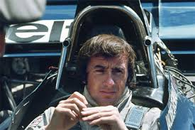

<html>
  <head>
    <meta charset="utf-8">
    <title>Jackie Stewart</title>
	<link rel="stylesheet" href="style/style.css">
  </head>
</html>

<h1>Jackie Stewart</h1>

<p>Jackie Stewart est un pilote écossais qui a régné sur le monde de la F1 à la fin des années 60 et au début des années 70. 
Seulement un an après la mort tragique de Jim Clark en 1968, 
Jackie Stewart deviens la nouvelle vedette du sport automobile brittanique en remportant son premier titre de champion du monde de Formule 1.

En 99 courses, Stewart est monté sur le podium à 43 reprises.
 Il remporte surtout 27 victoires, un record qui ne sera battu qu’en 1987 par un certain Alain Prost. En seulement 9 saisons de F1,
 il devient 3 fois champion du monde et finit second à 2 reprises. Élu sportif de l’année en 1973, 
 Jackie Stewart est sans aucun doute l’un des meilleurs pilotes de Formule 1 de l’histoire.</p>
 
  
  
  

<body background="image/fondnoir.jpg">
<background-attachment:center center;>